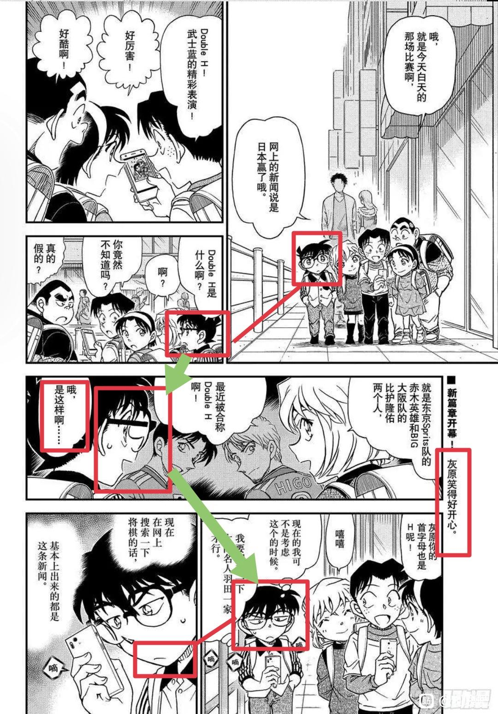
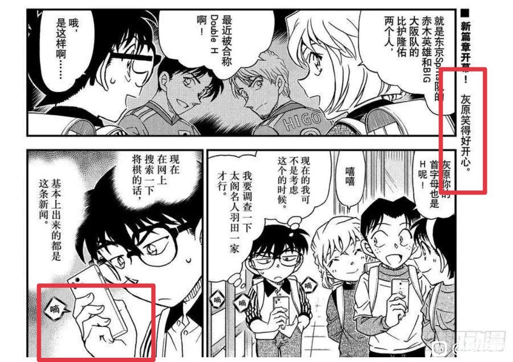
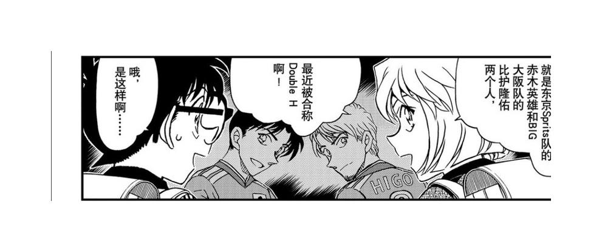
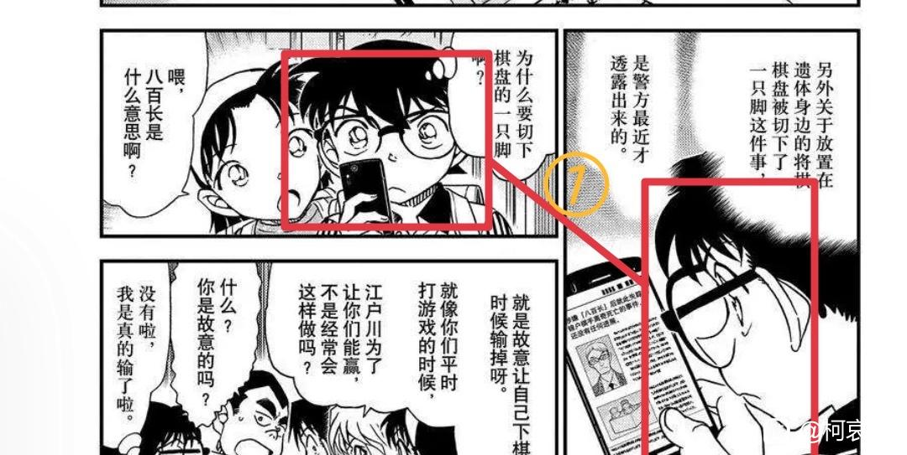
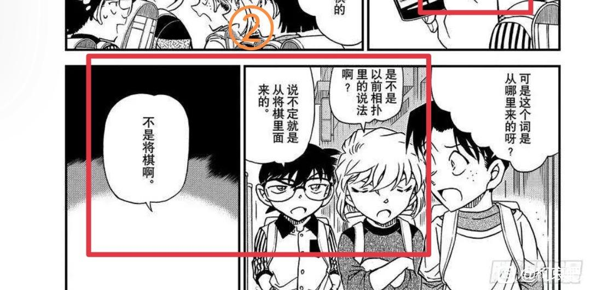

不知道有没有同学分析过，分析过也没关系，反正诚邀大家一起来嗑！
（犹豫了好久要发哪儿，这里或者隔壁文吧，想想篇幅太短还是发这里好了～，而且分析太多也不好？看漫画自己搞糖好像更快乐哈哈哈哈）
文笔粗糙致歉～
（犹豫了好久要发哪儿，这里或者隔壁文吧，想想篇幅太短还是发这里好了～，而且分析太多也不好？看漫画自己搞糖好像更快乐哈哈哈哈）
文笔粗糙致歉～
柯南出于好奇询问什么是double H，在小哀回答后就瘪着嘴开始看手机，带有不爽情绪进入查案状态。这里经历了两次情绪变化（绿箭头）。

2023-10-19 00:49 | 除你武器℃:感觉真的好不爽的样子哦2023-10-19 03:23 | Seraley:怎么说呢，73搞的很模棱两可，柯不爽的表情配的又是想破案的os

直接说变化过程，他问是好奇小哀的话题，在收到小哀回复后，变成流汗是要【强撑】他的正常。结果演不下去了，这个女人还“嘻嘻”地笑，【不爽不开心】，于是拿出手机看点别的。
灰原这种明显的正向情绪并不是因为他，他烦，于是下意识用查案来逃避现实转移注意力。
灰原这种明显的正向情绪并不是因为他，他烦，于是下意识用查案来逃避现实转移注意力。
2023-10-19 04:49 | 长大后可水了:挺有意思的，什么叫“现在不是考虑这个的时候”，那这人之前在考虑啥。
好玩的是刚子此处特意强调了“滴”——表示柯南此时按手机的力度较重。
更好玩的是右边旁白出现“灰原笑得好开心。”的字样。这是谁的体会呢，如果是光彦和步美看到小哀如此开心，以小孩儿的性格会直接表达没必要放旁白，所以旁白应该是柯南的内心真正所想（再者也只能是他才能完成恋爱喜剧里“喜”的要素）。
一句话概括柯南心情——【灰原笑得好开心，却因为别人，所以我不爽】
更好玩的是右边旁白出现“灰原笑得好开心。”的字样。这是谁的体会呢，如果是光彦和步美看到小哀如此开心，以小孩儿的性格会直接表达没必要放旁白，所以旁白应该是柯南的内心真正所想（再者也只能是他才能完成恋爱喜剧里“喜”的要素）。
一句话概括柯南心情——【灰原笑得好开心，却因为别人，所以我不爽】

2023-10-19 04:50 | 长大后可水了:右边还用了三个“嘀”表强调2023-10-19 06:03 | neon年年:回复 长大后可水了 :天才！
顶顶自己，有人吗，看得到嘛，还有一些还没发完
2023-10-18 11:10 | 江风一孤同:看得到，坐等

结合哀找猫哥气急败坏，在意给谁发消息等犯蠢名场面总结一下：柯南认为柯哀间的关系并非简单的朋友，或者直接一点他潜意识里认可自己和灰原间的暧昧。柯南承认灰原的【特殊】，所以他并不把二人身体接触放在心上，在他看来以二人的亲密程度，摸肩拉手闻衣服都是很自然的事情。
既然你对我是特殊的，那么我对你呢？柯南也会在乎灰原眼里自己的定位，因此得到了负反馈就会不开心。
也就能解释为什么看到兰提及冲田，他会第一时间想到比护和哀了。因为他从927话比护摸头开始，潜意识里就一直在计较小哀对比护的感情，柯南很敏感这种【特殊】（这其实也蛮愚蠢的，因为他很清楚哀的追星跟自己不是一回事儿。。但是感情的事儿是很难用理性去分析的）。然后偷窥兰的现状唤醒了它，于是大侦探就任性地将哀对比护的感情强行往自己身上套。
同理997话挂件篇里柯南也一样，他要在挂件上留下属于自己的记号，他介意并且要蛮横地插一脚比护哀间的【特殊】。
既然你对我是特殊的，那么我对你呢？柯南也会在乎灰原眼里自己的定位，因此得到了负反馈就会不开心。
也就能解释为什么看到兰提及冲田，他会第一时间想到比护和哀了。因为他从927话比护摸头开始，潜意识里就一直在计较小哀对比护的感情，柯南很敏感这种【特殊】（这其实也蛮愚蠢的，因为他很清楚哀的追星跟自己不是一回事儿。。但是感情的事儿是很难用理性去分析的）。然后偷窥兰的现状唤醒了它，于是大侦探就任性地将哀对比护的感情强行往自己身上套。
同理997话挂件篇里柯南也一样，他要在挂件上留下属于自己的记号，他介意并且要蛮横地插一脚比护哀间的【特殊】。
然后这里是楼主的过度联想，小柯的流汗表情结合文字应该是【愣住】了，“哦，是这样啊…”，省略号代表他一时难以消化自己的情绪。
作为暧昧关系的一方，他会愣住：对方为什么会提及别的男生？大家想一下，如果现实里你认为与某人存在暧昧，但ta在一次聊天里却突然提及其它异性的细节，那你是不是也会愣一下，然后开始怀疑你们的关系，“难道ta一直把我当普通朋友的吗”，发愣是因为难以消化。
作为暧昧关系的一方，他会愣住：对方为什么会提及别的男生？大家想一下，如果现实里你认为与某人存在暧昧，但ta在一次聊天里却突然提及其它异性的细节，那你是不是也会愣一下，然后开始怀疑你们的关系，“难道ta一直把我当普通朋友的吗”，发愣是因为难以消化。

然后就是接下来一幕，在柯南拿起手机进入查案状态后，情绪明显舒缓了很多，虽然嘴角还是垮着的，但结合文字情绪应该已经要消化完毕。①

但是没有，这里光彦好奇“八百长”是哪里来的，小哀给了自己的猜测后，柯南的情绪明显又上来了，估计还是生气，所以接她的话并不客观。在下一格羽田秀吉否定了“将棋”这个答案，这是很鲜明的对比，小柯这里完全就是为了呛小哀，针对她，所以蹦出来的话他自己也不在意是否准确。

基本都发完了，小插一句嘴，“double H”这种元素在原作里好像暂时没有意义，不像护身符、挂件这种元素可以拿来对比或映射。而且从将棋这一案来看前面这一串比护相关内容应该都可以删掉，所以从作者角度来看，这应该又是为了画柯哀关系故意包的饺子。
好分析，很细致。


这应该放到文吧里了
2023-10-19 00:26 | neon年年:谢谢喜欢，那我转发一下下～

楼主分析的小柯心态很细致很棒。推荐楼主可以去翻翻漫画楼的老楼，很早就有分析过double h这张图，前两位和后两位的对应关系。且，新一和志保是double s（sh）
2023-10-19 02:21 | neon年年:谢谢～这个double sh的说法确实是大开眼界，因为如果算上秀一应该是triple sh，但是73既然强调了只有两个，那这个称号就只能暗示柯哀，柯哀这边再加一分！
确实看动画的时候就觉得怪怪，明明聊到是他喜欢的足球，就算有烦心事也不至于那个表情，让我觉得他不喜欢足球了
老賊很故意，如果這劇情是新蘭，老賊會直接在柯南的框框裡寫出柯南不爽吃醋的想法，但如果是柯哀老賊卻偏偏不寫柯南的想法反而故意用別的事情來帶過去只會畫不爽的表情，這就很容易混淆讀者，所以看柯哀劇情要很仔細一些表情動作其實老賊有畫出來柯南在吃醋了，但是偏偏真正想法就是不讓讀者知道
2023-10-19 07:20 | QuantumEntangl:欲盖弥彰2023-10-29 04:07 | crjiaqiz:是的没错！或许也是这个原因，新一为mll吃醋的描写都要么特别俗套，要么像烟雾弹。

楼主说的太好了，看完觉得好磕多了
给自己引///流一下，关于比护我已经做完全部分析了，也在我的主页，感兴趣的8u可以看一下